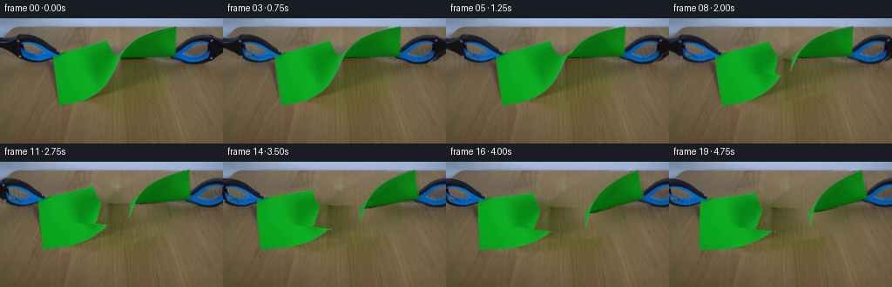
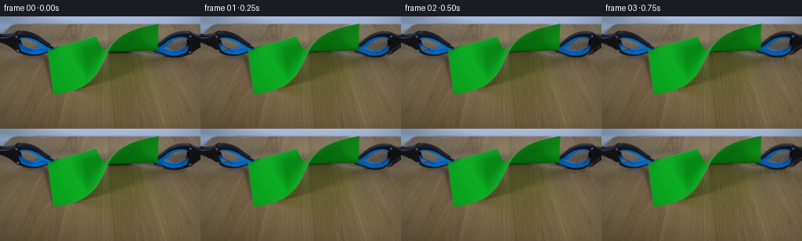

CODING AGENTS AS PIXEL WORLD MODELS
traex/GPT-6.1-Sol · 0044
点击播放 · 原生 RGB 像素
逐轮保存的候选
回放视频、检查图与代码变化。
每份候选均可单独播放。实际图片检查记录在下方工具轨迹中。
候选 01播放与检查图
点击播放 · 原生 RGB 像素

展开代码变化
--- 上一保存版本
+++ 本次保存版本
@@ -0,0 +1,190 @@
+from pathlib import Path
+import numpy as np
+from PIL import Image, ImageDraw
+import cv2
+from scipy.ndimage import gaussian_filter, distance_transform_edt
+import artifact_io
+
+ROOT = Path(__file__).resolve().parent
+H,W = 144,256
+Y,X=np.mgrid[:H,:W].astype(np.float32)
+
+def poly(points):
+ a=Image.new('L',(W*4,H*4)); ImageDraw.Draw(a).polygon([(round(x*4),round(y*4)) for x,y in points],fill=255)
+ return np.asarray(a.resize((W,H),Image.Resampling.LANCZOS)).astype(np.float32)/255
+
+def shift(a,dx,dy,theta=0,pivot=(128,72)):
+ gx,gy=pivot
+ c,s=np.cos(theta),np.sin(theta)
+ sx=c*(X-gx-dx)+s*(Y-gy-dy)+gx
+ sy=-s*(X-gx-dx)+c*(Y-gy-dy)+gy
+ return cv2.remap(a,sx.astype(np.float32),sy.astype(np.float32),cv2.INTER_LINEAR,borderMode=cv2.BORDER_CONSTANT)
+
+def surface_fit(image,mask):
+ xn=(X-128)/128; yn=(Y-75)/70
+ features=np.stack([np.ones_like(X),xn,yn,xn*xn,xn*yn,yn*yn,xn**3,xn*xn*yn,xn*yn*yn,yn**3],axis=-1)
+ a=features[mask]; b=image[mask]
+ coeff=np.linalg.lstsq(a,b,rcond=None)[0]
+ for _ in range(3):
+ err=np.linalg.norm(b-a@coeff,axis=1)
+ w=np.minimum(1,10/np.maximum(err,1))
+ coeff=np.linalg.lstsq(a*w[:,None],b*w[:,None],rcond=None)[0]
+ return features@coeff
+
+def main():
+ image=np.asarray(Image.open(ROOT/'first_frame.png').convert('RGB')).astype(np.float32)
+ r,g,b=image.transpose(2,0,1)
+ green=((g-r>23)&(g-b>22)&(Y>6)&(Y<102)&(X>57)&(X<205))
+ # Include the very narrow dark reverse surface under the upper fold.
+ core=green.astype(np.uint8)
+ allowed=cv2.dilate(core,np.ones((3,3),np.uint8))>0
+ paper_alpha=np.where(allowed & (g-r>3)&(g-b>3),np.clip((g-r-3)/30,0,1),0).astype(np.float32)
+ # Light green antialiased contour pixels have proportional foreground coverage.
+ edge=(paper_alpha>0)&(paper_alpha<1)
+ _,nearest=distance_transform_edt(~(paper_alpha>.99),return_indices=True)
+ local=image[nearest[0],nearest[1]]
+ chroma=local[:,:,1]-local[:,:,0]
+ paper_alpha[edge]=np.clip((g-r+6)[edge]/(chroma+6)[edge],0,1)
+ paper_alpha[green & (g-r>50)]=1
+
+ outline_l=poly([(0,22),(8,23),(16,22),(19,20),(23,18),(32,18),(41,20),(49,24),(57,29),(62,34),(66,38),(71,40),(71,43),(62,45),(60,47),(53,49),(44,51),(34,50),(28,48),(22,44),(18,41),(13,38),(8,37),(0,35)])
+ outline_r=poly([(256,23),(249,23),(242,20),(234,18),(226,18),(218,21),(211,25),(207,29),(204,33),(201,36),(201,40),(197,43),(193,44),(198,46),(202,49),(211,52),(224,54),(233,51),(240,46),(245,41),(250,39),(256,35)])
+ # Extract both the blue enamel and the black/grey metal, retaining the open rings.
+ object_test=(((b-r)>-4)|(np.max(image,axis=2)<73))&(np.max(image,axis=2)<158)
+ tools=[]
+ for outline in (outline_l,outline_r):
+ seed=(object_test&(outline>.15)).astype(np.uint8)
+ near=cv2.dilate(seed,np.ones((3,3),np.uint8))>0
+ a=np.where(near,np.clip((12-(r-b))/18,0,1),0).astype(np.float32)*outline
+ a=np.maximum(a,seed*outline)
+ a*=1-paper_alpha
+ tools.append(a)
+ tl,tr=tools
+ fg=np.maximum(paper_alpha,np.maximum(tl,tr))
+ holemask=(fg>.025).astype(np.uint8)
+ holemask=cv2.dilate(holemask,np.ones((3,3),np.uint8))
+ inpaint=cv2.inpaint(image.astype(np.uint8),holemask,5,cv2.INPAINT_TELEA).astype(np.float32)
+
+ # Recover the unobstructed fixed tabletop from its surrounding colour and grain.
+ shadow_region=poly([(56,42),(143,38),(208,41),(232,49),(236,61),(212,68),(195,79),(155,91),(119,103),(78,104),(60,91)])
+ toolshadow=poly([(0,31),(71,36),(80,52),(70,64),(25,58),(0,48)])+poly([(189,36),(256,31),(256,58),(218,64),(193,54)])
+ forbidden=np.maximum(shadow_region,np.clip(toolshadow,0,1))
+ sample=(Y>=11)&(holemask==0)&(forbidden<.015)&(r>b+12)&(r>82)
+ ambient=surface_fit(image,sample).astype(np.float32)
+ rng=np.random.default_rng(1044)
+ # Real source grain, transported from an unoccluded patch (not synthesized objects).
+ patch=image[104:144,76:212]
+ detail=patch-gaussian_filter(patch,(2.0,2.0,0))
+ grain=detail[(Y.astype(int)+13)%40,(X.astype(int)+37)%136]
+ grain=grain*.7+gaussian_filter(rng.normal(0,1,(H,W,1)).astype(np.float32),(.65,.65,0))*.9
+ ambient+=grain
+ restore=np.maximum(forbidden,holemask.astype(np.float32))
+ restore=gaussian_filter(restore,2.1)
+ restore=np.clip(restore*1.17,0,1)
+ restore*=np.clip((Y-8)/3,0,1)
+ base=inpaint*(1-restore[:,:,None])+ambient*restore[:,:,None]
+ # Retain the measured translucent green cast and diffuse tool shadows as signed layers.
+ residual=inpaint-base
+ # Hidden shadow values must not carry traces of the occluded green paper.
+ hidden=(fg>.5)
+ pred_l=shift(paper_alpha,31,8)
+ pred_r=shift(paper_alpha,14,12)
+ pred=gaussian_filter(pred_l,5)*.6+gaussian_filter(pred_r,4)*.18
+ predicted=-pred[:,:,None]*np.array([47,23,45],np.float32)
+ residual[hidden]=predicted[hidden]
+ # Smooth only the filled shadow interiors; leave visible initial tabletop grain exact.
+ ltoolw=np.clip((82-X)/16,0,1)*np.clip((71-Y)/12,0,1)
+ rtoolw=np.clip((X-190)/18,0,1)*np.clip((71-Y)/12,0,1)
+ rem=1-np.clip(ltoolw+rtoolw,0,1)
+ rw=np.clip((X-143)/37,0,1)*np.clip((82-Y)/28,0,1)
+ weights=[ltoolw,rtoolw,rem*(1-rw),rem*rw]
+ shadow_layers=[residual*w[:,:,None] for w in weights]
+ initial_background=base+residual
+
+ def unmatte(alpha):
+ aa=alpha[:,:,None]
+ return np.clip((image-initial_background*(1-aa))/np.maximum(aa,.03),0,255).astype(np.float32)
+ pcolor=unmatte(paper_alpha)
+ lcolor=unmatte(tl); rcolor=unmatte(tr)
+
+ # The crack proceeds from the existing upper V to the lower free edge.
+ seam=np.interp(Y[:,0],[0,42,44,46,48,50,52,54,56,58,60,62,144],[133,133,132.7,131.4,132.2,132.0,131.0,131.3,130.2,130.0,129.6,130.3,130.3])[:,None]
+ seam=np.broadcast_to(seam,(H,W)).astype(np.float32)
+ frac_left=np.clip(seam-X+.5,0,1)
+ aleft=paper_alpha*frac_left; aright=paper_alpha*(1-frac_left)
+
+ def warp_paper(alpha,color,side,dx,dy,angle,f):
+ gx,gy=(63.0,43.0) if side==0 else (201.0,41.5)
+ fracture_y=[40,40,40,40,40,42.5,46.5,54.5,65,70,70,70,70,70,70,70,70,70,70,70][f]
+ post=np.clip((f-7)/6,0,1)
+ # Forward material map; unreleased fibres still meet at the same neck.
+ def deform(sx,sy):
+ cut=np.interp(sy.ravel(),Y[:,0],seam[:,0]).reshape(sy.shape)
+ u=np.clip((sx-gx)/(cut-gx),0,1.1)
+ release=np.clip((fracture_y-sy)/2.5,0,1) if f>=5 else np.zeros_like(sy)
+ gripweight=1-u*(1-release)
+ c,s=np.cos(angle),np.sin(angle)
+ rx=(c-1)*(sx-gx)-s*(sy-gy)
+ ry=s*(sx-gx)+(c-1)*(sy-gy)
+ ox=sx+dx*gripweight+rx
+ oy=sy+dy*gripweight+ry
+ if side==0:
+ v=np.clip((sy-43)/57,0,1)
+ flutter=1.35*post*np.sin((f-8)*.83+v*2.6)*v
+ ox+=flutter
+ oy+=.8*post*np.sin((f-7)*.68+u*2.2)*u
+ else:
+ oy+=1.5*post*np.sin((f-8)*.72+u*1.7)*u
+ ox+=.55*post*np.sin((f-8)*.9+u*3)*u
+ return ox,oy
+ # Numerically invert the small, smooth analytic sheet deformation.
+ sx=X-dx; sy=Y-dy
+ for _ in range(7):
+ fx,fy=deform(sx,sy)
+ sx=sx+(X-fx); sy=sy+(Y-fy)
+ sx=sx.astype(np.float32); sy=sy.astype(np.float32)
+ u=np.clip((X-gx)/(seam-gx),0,1)
+ shade=1+.025*post*u*np.sin(.08*(X-gx)+(f-8)*.65)
+ shade-=.027*post*np.exp(-((X-seam)/4)**2)
+ tex=color*shade[:,:,None]
+ torn=(np.abs(X-seam)<1.1)&(Y>=42)&(Y<fracture_y)&(Y<63)
+ # Minute irregular fibrous, pale-green fracture edge, less than one pixel wide.
+ highlight=np.exp(-((X-seam)/.65)**2)*torn
+ speck=.5+.5*np.sin(Y*9.71+X*3.37)
+ mix=highlight*(.18+.12*speck)*post
+ tex=tex*(1-mix[:,:,None])+np.array([99,170,72],np.float32)*mix[:,:,None]
+ wa=cv2.remap(alpha,sx,sy,cv2.INTER_LINEAR,borderMode=cv2.BORDER_CONSTANT)
+ wc=cv2.remap(tex*alpha[:,:,None],sx,sy,cv2.INTER_LINEAR,borderMode=cv2.BORDER_CONSTANT)
+ return wc,wa
+
+ lpath=np.array([0,-.3,-.8,-1.5,-2.5,-3.5,-4.6,-6,-8.3,-11,-14,-17,-19.2,-21,-22,-23,-24,-24.5,-24.7,-24.8])
+ rpath=np.array([0,.35,.9,1.7,2.7,3.6,4.7,6.4,8.8,11.3,14.3,16.8,19,21.1,22.9,24,24.8,25.3,25.5,25.6])
+ frames=[image.astype(np.uint8)]
+ for f in range(1,20):
+ dxl,dxr=lpath[f],rpath[f]
+ relaxed=np.clip((f-8)/9,0,1)
+ smooth=relaxed*relaxed*(3-2*relaxed)
+ dyl=1.1*(f/19); dyr=-.65*(f/19)
+ thl=np.deg2rad(8.5*smooth+.9*relaxed*np.sin((f-8)*.8))
+ thr=np.deg2rad(-12*smooth-1.0*relaxed*np.sin((f-8)*.85))
+ out=base.copy()
+ out+=shift(shadow_layers[0],dxl,dyl)
+ out+=shift(shadow_layers[1],dxr,dyr)
+ out+=shift(shadow_layers[2],dxl*.89,dyl+smooth*1.0,thl*.55,(94,68))
+ out+=shift(shadow_layers[3],dxr*.88,dyr+smooth*2,thr*.55,(168,43))
+ # Back fragment followed by the near hanging flap.
+ for alpha,col,side,dx,dy,th in [(aright,pcolor,1,dxr,dyr,thr),(aleft,pcolor,0,dxl,dyl,thl)]:
+ premult,a=warp_paper(alpha,col,side,dx,dy,th,f)
+ out=out*(1-a[:,:,None])+premult
+ for alpha,col,dx,dy,pivot in [(tl,lcolor,dxl,dyl,(63,43)),(tr,rcolor,dxr,dyr,(201,41.5))]:
+ a=shift(alpha,dx,dy)
+ premult=shift(col*alpha[:,:,None],dx,dy)
+ out=out*(1-a[:,:,None])+premult
+ frames.append(np.clip(np.rint(out),0,255).astype(np.uint8))
+ frames=np.stack(frames)
+ artifact_io.save(frames,ROOT)
+ Image.fromarray(np.clip(base,0,255).astype(np.uint8)).save(ROOT/'.tmp/background.png')
+ Image.fromarray(np.clip(fg*255,0,255).astype(np.uint8)).save(ROOT/'.tmp/extraction.png')
+ np.save(ROOT/'.tmp/frames.npy',frames)
+
+if __name__=='__main__': main()
候选 02播放与检查图
点击播放 · 原生 RGB 像素

展开代码变化
--- 上一保存版本
+++ 本次保存版本
@@ -108,20 +108,20 @@
lcolor=unmatte(tl); rcolor=unmatte(tr)
# The crack proceeds from the existing upper V to the lower free edge.
- seam=np.interp(Y[:,0],[0,42,44,46,48,50,52,54,56,58,60,62,144],[133,133,132.7,131.4,132.2,132.0,131.0,131.3,130.2,130.0,129.6,130.3,130.3])[:,None]
+ seam=np.interp(Y[:,0],[0,42,44,46,48,50,52,54,56,58,60,62,144],[133,133,133.4,134.1,133.8,134.4,134.2,135.0,134.8,135.2,135.3,135.3,135.3])[:,None]
seam=np.broadcast_to(seam,(H,W)).astype(np.float32)
frac_left=np.clip(seam-X+.5,0,1)
aleft=paper_alpha*frac_left; aright=paper_alpha*(1-frac_left)
def warp_paper(alpha,color,side,dx,dy,angle,f):
gx,gy=(63.0,43.0) if side==0 else (201.0,41.5)
- fracture_y=[40,40,40,40,40,42.5,46.5,54.5,65,70,70,70,70,70,70,70,70,70,70,70][f]
+ fracture_y=[40,40,40,40,40,42.5,45.5,49.5,58,70,70,70,70,70,70,70,70,70,70,70][f]
post=np.clip((f-7)/6,0,1)
# Forward material map; unreleased fibres still meet at the same neck.
def deform(sx,sy):
cut=np.interp(sy.ravel(),Y[:,0],seam[:,0]).reshape(sy.shape)
u=np.clip((sx-gx)/(cut-gx),0,1.1)
- release=np.clip((fracture_y-sy)/2.5,0,1) if f>=5 else np.zeros_like(sy)
+ release=np.ones_like(sy) if f>=8 else (np.clip((fracture_y-sy)/2.5,0,1) if f>=5 else np.zeros_like(sy))
gripweight=1-u*(1-release)
c,s=np.cos(angle),np.sin(angle)
rx=(c-1)*(sx-gx)-s*(sy-gy)
候选 03播放与检查图
候选 04播放与检查图
点击播放 · 原生 RGB 像素

展开代码变化
--- 上一保存版本
+++ 本次保存版本
@@ -117,11 +117,14 @@
gx,gy=(63.0,43.0) if side==0 else (201.0,41.5)
fracture_y=[40,40,40,40,40,42.5,45.5,49.5,58,70,70,70,70,70,70,70,70,70,70,70][f]
post=np.clip((f-7)/6,0,1)
+ flutter_damping=np.exp(-max(0,f-11)*.13)
# Forward material map; unreleased fibres still meet at the same neck.
def deform(sx,sy):
cut=np.interp(sy.ravel(),Y[:,0],seam[:,0]).reshape(sy.shape)
u=np.clip((sx-gx)/(cut-gx),0,1.1)
release=np.ones_like(sy) if f>=8 else (np.clip((fracture_y-sy)/2.5,0,1) if f>=5 else np.zeros_like(sy))
+ if side==0:
+ release=np.maximum(release,np.clip((sy-47)/15,0,1))
gripweight=1-u*(1-release)
c,s=np.cos(angle),np.sin(angle)
rx=(c-1)*(sx-gx)-s*(sy-gy)
@@ -130,12 +133,12 @@
oy=sy+dy*gripweight+ry
if side==0:
v=np.clip((sy-43)/57,0,1)
- flutter=1.35*post*np.sin((f-8)*.83+v*2.6)*v
+ flutter=1.35*post*flutter_damping*np.sin((f-8)*.83+v*2.6)*v
ox+=flutter
- oy+=.8*post*np.sin((f-7)*.68+u*2.2)*u
+ oy+=.8*post*flutter_damping*np.sin((f-7)*.68+u*2.2)*u
else:
- oy+=1.5*post*np.sin((f-8)*.72+u*1.7)*u
- ox+=.55*post*np.sin((f-8)*.9+u*3)*u
+ oy+=1.5*post*flutter_damping*np.sin((f-8)*.72+u*1.7)*u
+ ox+=.55*post*flutter_damping*np.sin((f-8)*.9+u*3)*u
return ox,oy
# Numerically invert the small, smooth analytic sheet deformation.
sx=X-dx; sy=Y-dy
可观测工具轨迹
实际执行的命令与返回图片。
命令 1exit 0
/bin/bash -lc 'ls -la && cat prompt.txt && cat GENERATION_RULES.md'
命令 2exit 0
/bin/bash -lc "cat artifact_io.py && python - <<'PY'
from PIL import Image
import numpy as np
im=np.array(Image.open('first_frame.png')); print(im.shape)
Image.open('first_frame.png').resize((256,144)).save('.tmp/first256.png')
for y in range(0,im.shape[0],8):
print(''.join('G' if g>r*1.25 and g>b*1.12 and g>65 else 'B' if b>r*1.3 and b>g*1.12 else '#' if max(r,g,b)<55 else '+' if max(r,g,b)<120 else ':' if max(r,g,b)<180 else '.' for r,g,b in im[y,::8].astype(float)))
PY"命令 3exit 0
/bin/bash -lc "python - <<'PY'
import numpy as np
from PIL import Image
im=np.array(Image.open('first_frame.png')).astype(float)
r,g,b=im.transpose(2,0,1)
for y in range(0,144,3):
print(f'{y:3} '+''.join('G' if g[y,x]>r[y,x]*1.25 and g[y,x]>b[y,x]*1.12 and g[y,x]>65 else 'b' if b[y,x]>r[y,x]*1.3 and b[y,x]>g[y,x]*1.12 else '#' if max(im[y,x])<55 else 'o' if max(im[y,x])<100 else '-' if max(im[y,x])<140 else ':' if max(im[y,x])<180 else '.' for x in range(0,256,3)))
print('green extents:')
m=(g>r*1.25)&(g>b*1.12)&(g>65)
for y in range(8,111,2):
xs=np.where(m[y])[0]; runs=np.split(xs,np.where(np.diff(xs)>1)[0]+1); print(y,[(int(a[0]),int(a[-1])) for a in runs if len(a)])
print('samples')
for y in [0,5,10,15,20,25,30,35,40,45,50,60,70,80,90,100,120,140]:
print(y, [(x, im[y,x].astype(int).tolist()) for x in range(0,256,16)])
PY"命令 4exit 0
/bin/bash -lc "python - <<'PY'
import importlib.util
for a in ['cv2','scipy','numpy','PIL']: print(a, bool(importlib.util.find_spec(a)))
import numpy as np
from PIL import Image
im=np.array(Image.open('first_frame.png')).astype(float)
for y in range(17,56):
print(f'{y:2} '+''.join('G' if g-r>25 and g-b>25 else 'B' if b-r>20 and b-g>15 else '#' if max(r,g,b)<50 else 's' if abs(r-g)<9 and max(r,g,b)<100 else '.' for r,g,b in im[y,:76]))
print('right')
for y in range(16,57):
print(f'{y:2} '+''.join('G' if g-r>25 and g-b>25 else 'B' if b-r>20 and b-g>15 else '#' if max(r,g,b)<50 else 's' if abs(r-g)<9 and max(r,g,b)<100 else '.' for r,g,b in im[y,190:]))
print('neck')
for y in range(24,55):
print(f'{y:2} '+''.join('G' if g-r>25 and g-b>25 else 'g' if g-r>10 and g-b>10 else '#' if max(r,g,b)<60 else '.' for r,g,b in im[y,115:154]))
PY"命令 5exit 0
/bin/bash -lc "cat > generate.py <<'PY'
from pathlib import Path
import numpy as np
from PIL import Image, ImageDraw
import cv2
from scipy.ndimage import gaussian_filter, distance_transform_edt
import artifact_io
ROOT = Path(__file__).resolve().parent
H,W = 144,256
Y,X=np.mgrid[:H,:W].astype(np.float32)
def poly(points):
a=Image.new('L',(W*4,H*4)); ImageDraw.Draw(a).polygon([(round(x*4),round(y*4)) for x,y in points],fill=255)
return np.asarray(a.resize((W,H),Image.Resampling.LANCZOS)).astype(np.float32)/255
def shift(a,dx,dy,theta=0,pivot=(128,72)):
gx,gy=pivot
c,s=np.cos(theta),np.sin(theta)
sx=c*(X-gx-dx)+s*(Y-gy-dy)+gx
sy=-s*(X-gx-dx)+c*(Y-gy-dy)+gy
return cv2.remap(a,sx.astype(np.float32),sy.astype(np.float32),cv2.INTER_LINEAR,borderMode=cv2.BORDER_CONSTANT)
def surface_fit(image,mask):
xn=(X-128)/128; yn=(Y-75)/70
features=np.stack([np.ones_like(X),xn,yn,xn*xn,xn*yn,yn*yn,xn**3,xn*xn*yn,xn*yn*yn,yn**3],axis=-1)
a=features[mask]; b=image[mask]
coeff=np.linalg.lstsq(a,b,rcond=None)[0]
for _ in range(3):
err=np.linalg.norm(b-a@coeff,axis=1)
w=np.minimum(1,10/np.maximum(err,1))
coeff=np.linalg.lstsq(a*w[:,None],b*w[:,None],rcond=None)[0]
return features@coeff
def main():
image=np.asarray(Image.open(ROOT/'first_frame.png').convert('RGB')).astype(np.float32)
r,g,b=image.transpose(2,0,1)
green=((g-r>23)&(g-b>22)&(Y>6)&(Y<102)&(X>57)&(X<205))
# Include the very narrow dark reverse surface under the upper fold.
core=green.astype(np.uint8)
allowed=cv2.dilate(core,np.ones((3,3),np.uint8))>0
paper_alpha=np.where(allowed & (g-r>3)&(g-b>3),np.clip((g-r-3)/30,0,1),0).astype(np.float32)
# Light green antialiased contour pixels have proportional foreground coverage.
edge=(paper_alpha>0)&(paper_alpha<1)
_,nearest=distance_transform_edt(~(paper_alpha>.99),return_indices=True)
local=image[nearest[0],nearest[1]]
chroma=local[:,:,1]-local[:,:,0]
paper_alpha[edge]=np.clip((g-r+6)[edge]/(chroma+6)[edge],0,1)
paper_alpha[green & (g-r>50)]=1
outline_l=poly([(0,22),(8,23),(16,22),(19,20),(23,18),(32,18),(41,20),(49,24),(57,29),(62,34),(66,38),(71,40),(71,43),(62,45),(60,47),(53,49),(44,51),(34,50),(28,48),(22,44),(18,41),(13,38),(8,37),(0,35)])
outline_r=poly([(256,23),(249,23),(242,20),(234,18),(226,18),(218,21),(211,25),(207,29),(204,33),(201,36),(201,40),(197,43),(193,44),(198,46),(202,49),(211,52),(224,54),(233,51),(240,46),(245,41),(250,39),(256,35)])
# Extract both the blue enamel and the black/grey metal, retaining the open rings.
object_test=(((b-r)>-4)|(np.max(image,axis=2)<73))&(np.max(image,axis=2)<158)
tools=[]
for outline in (outline_l,outline_r):
seed=(object_test&(outline>.15)).astype(np.uint8)
near=cv2.dilate(seed,np.ones((3,3),np.uint8))>0
a=np.where(near,np.clip((12-(r-b))/18,0,1),0).astype(np.float32)*outline
a=np.maximum(a,seed*outline)
a*=1-paper_alpha
tools.append(a)
tl,tr=tools
fg=np.maximum(paper_alpha,np.maximum(tl,tr))
holemask=(fg>.025).astype(np.uint8)
holemask=cv2.dilate(holemask,np.ones((3,3),np.uint8))
inpaint=cv2.inpaint(image.astype(np.uint8),holemask,5,cv2.INPAINT_TELEA).astype(np.float32)
# Recover the unobstructed fixed tabletop from its surrounding colour and grain.
shadow_region=poly([(56,42),(143,38),(208,41),(232,49),(236,61),(212,68),(195,79),(155,91),(119,103),(78,104),(60,91)])
toolshadow=poly([(0,31),(71,36),(80,52),(70,64),(25,58),(0,48)])+poly([(189,36),(256,31),(256,58),(218,64),(193,54)])
forbidden=np.maximum(shadow_region,np.clip(toolshadow,0,1))
sample=(Y>=11)&(holemask==0)&(forbidden<.015)&(r>b+12)&(r>82)
ambient=surface_fit(image,sample).astype(np.float32)
rng=np.random.default_rng(1044)
# Real source grain, transported from an unoccluded patch (not synthesized objects).
patch=image[104:144,76:212]
detail=patch-gaussian_filter(patch,(2.0,2.0,0))
grain=detail[(Y.astype(int)+13)%40,(X.astype(int)+37)%136]
grain=grain*.7+gaussian_filter(rng.normal(0,1,(H,W,1)).astype(np.float32),(.65,.65,0))*.9
ambient+=grain
restore=np.maximum(forbidden,holemask.astype(np.float32))
restore=gaussian_filter(restore,2.1)
restore=np.clip(restore*1.17,0,1)
restore*=np.clip((Y-8)/3,0,1)
base=inpaint*(1-restore[:,:,None])+ambient*restore[:,:,None]
# Retain the measured translucent green cast and diffuse tool shadows as signed layers.
residual=inpaint-base
# Hidden shadow values must not carry traces of the occluded green paper.
hidden=(fg>.5)
pred_l=shift(paper_alpha,31,8)
pred_r=shift(paper_alpha,14,12)
pred=gaussian_filter(pred_l,5)*.6+gaussian_filter(pred_r,4)*.18
predicted=-pred[:,:,None]*np.array([47,23,45],np.float32)
residual[hidden]=predicted[hidden]
# Smooth only the filled shadow interiors; leave visible initial tabletop grain exact.
ltoolw=np.clip((82-X)/16,0,1)*np.clip((71-Y)/12,0,1)
rtoolw=np.clip((X-190)/18,0,1)*np.clip((71-Y)/12,0,1)
rem=1-np.clip(ltoolw+rtoolw,0,1)
rw=np.clip((X-143)/37,0,1)*np.clip((82-Y)/28,0,1)
weights=[ltoolw,rtoolw,rem*(1-rw),rem*rw]
shadow_layers=[residual*w[:,:,None] for w in weights]
initial_background=base+residual
def unmatte(alpha):
aa=alpha[:,:,None]
return np.clip((image-initial_background*(1-aa))/np.maximum(aa,.03),0,255).astype(np.float32)
pcolor=unmatte(paper_alpha)
lcolor=unmatte(tl); rcolor=unmatte(tr)
# The crack proceeds from the existing upper V to the lower free edge.
seam=np.interp(Y[:,0],[0,42,44,46,48,50,52,54,56,58,60,62,144],[133,133,132.7,131.4,132.2,132.0,131.0,131.3,130.2,130.0,129.6,130.3,130.3])[:,None]
seam=np.broadcast_to(seam,(H,W)).astype(np.float32)
frac_left=np.clip(seam-X+.5,0,1)
aleft=paper_alpha*frac_left; aright=paper_alpha*(1-frac_left)
def warp_paper(alpha,color,side,dx,dy,angle,f):
gx,gy=(63.0,43.0) if side==0 else (201.0,41.5)
fracture_y=[40,40,40,40,40,42.5,46.5,54.5,65,70,70,70,70,70,70,70,70,70,70,70][f]
post=np.clip((f-7)/6,0,1)
# Forward material map; unreleased fibres still meet at the same neck.
def deform(sx,sy):
cut=np.interp(sy.ravel(),Y[:,0],seam[:,0]).reshape(sy.shape)
u=np.clip((sx-gx)/(cut-gx),0,1.1)
release=np.clip((fracture_y-sy)/2.5,0,1) if f>=5 else np.zeros_like(sy)
gripweight=1-u*(1-release)
c,s=np.cos(angle),np.sin(angle)
rx=(c-1)*(sx-gx)-s*(sy-gy)
ry=s*(sx-gx)+(c-1)*(sy-gy)
ox=sx+dx*gripweight+rx
oy=sy+dy*gripweight+ry
if side==0:
v=np.clip((sy-43)/57,0,1)
flutter=1.35*post*np.sin((f-8)*.83+v*2.6)*v
ox+=flutter
oy+=.8*post*np.sin((f-7)*.68+u*2.2)*u
else:
oy+=1.5*post*np.sin((f-8)*.72+u*1.7)*u
ox+=.55*post*np.sin((f-8)*.9+u*3)*u
return ox,oy
# Numerically invert the small, smooth analytic sheet deformation.
sx=X-dx; sy=Y-dy
for _ in range(7):
fx,fy=deform(sx,sy)
sx=sx+(X-fx); sy=sy+(Y-fy)
sx=sx.astype(np.float32); sy=sy.astype(np.float32)
u=np.clip((X-gx)/(seam-gx),0,1)
shade=1+.025*post*u*np.sin(.08*(X-gx)+(f-8)*.65)
shade-=.027*post*np.exp(-((X-seam)/4)**2)
tex=color*shade[:,:,None]
torn=(np.abs(X-seam)<1.1)&(Y>=42)&(Y<fracture_y)&(Y<63)
# Minute irregular fibrous, pale-green fracture edge, less than one pixel wide.
highlight=np.exp(-((X-seam)/.65)**2)*torn
speck=.5+.5*np.sin(Y*9.71+X*3.37)
mix=highlight*(.18+.12*speck)*post
tex=tex*(1-mix[:,:,None])+np.array([99,170,72],np.float32)*mix[:,:,None]
wa=cv2.remap(alpha,sx,sy,cv2.INTER_LINEAR,borderMode=cv2.BORDER_CONSTANT)
wc=cv2.remap(tex*alpha[:,:,None],sx,sy,cv2.INTER_LINEAR,borderMode=cv2.BORDER_CONSTANT)
return wc,wa
lpath=np.array([0,-.3,-.8,-1.5,-2.5,-3.5,-4.6,-6,-8.3,-11,-14,-17,-19.2,-21,-22,-23,-24,-24.5,-24.7,-24.8])
rpath=np.array([0,.35,.9,1.7,2.7,3.6,4.7,6.4,8.8,11.3,14.3,16.8,19,21.1,22.9,24,24.8,25.3,25.5,25.6])
frames=[image.astype(np.uint8)]
for f in range(1,20):
dxl,dxr=lpath[f],rpath[f]
relaxed=np.clip((f-8)/9,0,1)
smooth=relaxed*relaxed*(3-2*relaxed)
dyl=1.1*(f/19); dyr=-.65*(f/19)
thl=np.deg2rad(8.5*smooth+.9*relaxed*np.sin((f-8)*.8))
thr=np.deg2rad(-12*smooth-1.0*relaxed*np.sin((f-8)*.85))
out=base.copy()
out+=shift(shadow_layers[0],dxl,dyl)
out+=shift(shadow_layers[1],dxr,dyr)
out+=shift(shadow_layers[2],dxl*.89,dyl+smooth*1.0,thl*.55,(94,68))
out+=shift(shadow_layers[3],dxr*.88,dyr+smooth*2,thr*.55,(168,43))
# Back fragment followed by the near hanging flap.
for alpha,col,side,dx,dy,th in [(aright,pcolor,1,dxr,dyr,thr),(aleft,pcolor,0,dxl,dyl,thl)]:
premult,a=warp_paper(alpha,col,side,dx,dy,th,f)
out=out*(1-a[:,:,None])+premult
for alpha,col,dx,dy,pivot in [(tl,lcolor,dxl,dyl,(63,43)),(tr,rcolor,dxr,dyr,(201,41.5))]:
a=shift(alpha,dx,dy)
premult=shift(col*alpha[:,:,None],dx,dy)
out=out*(1-a[:,:,None])+premult
frames.append(np.clip(np.rint(out),0,255).astype(np.uint8))
frames=np.stack(frames)
artifact_io.save(frames,ROOT)
Image.fromarray(np.clip(base,0,255).astype(np.uint8)).save(ROOT/'.tmp/background.png')
Image.fromarray(np.clip(fg*255,0,255).astype(np.uint8)).save(ROOT/'.tmp/extraction.png')
np.save(ROOT/'.tmp/frames.npy',frames)
if __name__=='__main__': main()
PY
python generate.py"命令 6exit 0
/bin/bash -lc "python - <<'PY'
import numpy as np
from PIL import Image
frames=np.load('.tmp/frames.npy')
for f in [0,1,5,8,12,19]:
im=frames[f].astype(float); print('\\nFRAME',f)
for y in range(9,108,3):
print(f'{y:3} '+''.join('G' if g-r>25 and g-b>25 else 'b' if b-r>20 and b-g>15 else '#' if max(r,g,b)<50 else 's' if abs(r-g)<9 and max(r,g,b)<100 else '.' for r,g,b in im[y,::3]))
print('frame jump',np.abs(frames[f].astype(float)-frames[max(f-1,0)].astype(float)).mean())
print('background samples')
b=np.array(Image.open('.tmp/background.png'))
for y in [30,40,45,50,60,70,90]: print(y,[(x,b[y,x].tolist()) for x in range(48,224,16)])
PY"命令 7exit 0
/bin/bash -lc "python - <<'PY'
import numpy as np
from PIL import Image
im=np.array(Image.open('first_frame.png'))
for y in range(42,50):
print(y,[(x,im[y,x].tolist()) for x in range(130,179,4)])
f=np.load('.tmp/frames.npy'); bg=np.array(Image.open('.tmp/background.png'))
print('tail')
for t in [0,1,19]:
r,g,b=f[t].astype(float).transpose(2,0,1); m=(g-r>40)&(g-b>40)
for y in [39,42,45,60,65,70,75,80,85,90,95,100]:
xx=np.where(m[y])[0]; print(t,y,(xx[0],xx[-1]) if len(xx) else None)
print('tool extent changes pixel')
for t in [0,19]:
r,g,b=f[t].astype(float).transpose(2,0,1);mask=((b-r>25)&(b-g>15))&(np.mgrid[:144,:256][0]>15)
ys,xs=np.where(mask); print(t,xs.min(),xs.max(),ys.min(),ys.max())
PY"命令 8exit 0
/bin/bash -lc "python - <<'PY'
p='generate.py'
s=open(p).read().replace(\"[0,42,44,46,48,50,52,54,56,58,60,62,144],[133,133,132.7,131.4,132.2,132.0,131.0,131.3,130.2,130.0,129.6,130.3,130.3]\", \"[0,42,44,46,48,50,52,54,56,58,60,62,144],[133,133,133.4,134.1,133.8,134.4,134.2,135.0,134.8,135.2,135.3,135.3,135.3]\")
s=s.replace('[40,40,40,40,40,42.5,46.5,54.5,65,70,70,70,70,70,70,70,70,70,70,70]', '[40,40,40,40,40,42.5,45.5,49.5,58,70,70,70,70,70,70,70,70,70,70,70]')
s=s.replace('release=np.clip((fracture_y-sy)/2.5,0,1) if f>=5 else np.zeros_like(sy)', 'release=np.ones_like(sy) if f>=8 else (np.clip((fracture_y-sy)/2.5,0,1) if f>=5 else np.zeros_like(sy))')
open(p,'w').write(s)
PY
python generate.py
python - <<'PY'
import numpy as np
from PIL import Image
f=np.load('.tmp/frames.npy'); im=f[-1].astype(float)
for y in range(9,111,3):
print(f'{y:3} '+''.join('G' if g-r>25 and g-b>25 else 'b' if b-r>20 and b-g>15 else '#' if max(r,g,b)<50 else 's' if abs(r-g)<9 and max(r,g,b)<100 else '.' for r,g,b in im[y,::3]))
print('Initial equality',np.array_equal(f[0], np.asarray(Image.open('first_frame.png'))))
print('changes', [round(np.abs(f[i].astype(float)-f[i-1]).mean(),2) for i in range(1,20)])
PY"命令 9exit 0
/bin/bash -lc "python - <<'PY'
p='generate.py'
s=open(p).read()
s=s.replace('post=np.clip((f-7)/6,0,1)\\n # Forward', 'post=np.clip((f-7)/6,0,1)\\n flutter_damping=np.exp(-max(0,f-11)*.13)\\n # Forward')
s=s.replace('gripweight=1-u*(1-release)', 'if side==0:\\n release=np.maximum(release,np.clip((sy-47)/15,0,1))\\n gripweight=1-u*(1-release)')
s=s.replace('flutter=1.35*post*np.sin', 'flutter=1.35*post*flutter_damping*np.sin')
s=s.replace('oy+=.8*post*np.sin', 'oy+=.8*post*flutter_damping*np.sin')
s=s.replace('oy+=1.5*post*np.sin', 'oy+=1.5*post*flutter_damping*np.sin')
s=s.replace('ox+=.55*post*np.sin', 'ox+=.55*post*flutter_damping*np.sin')
# Remove diagnostic-only code from the runnable submission and no change to actual output.
open(p,'w').write(s)
PY
python generate.py
ls -lh pixels.npz index.html frames/00.png frames/19.png"保存候选 4 份；完成命令 9 次；可验证图片返回 0 张。原始 API 响应与完整日志保留在本地。